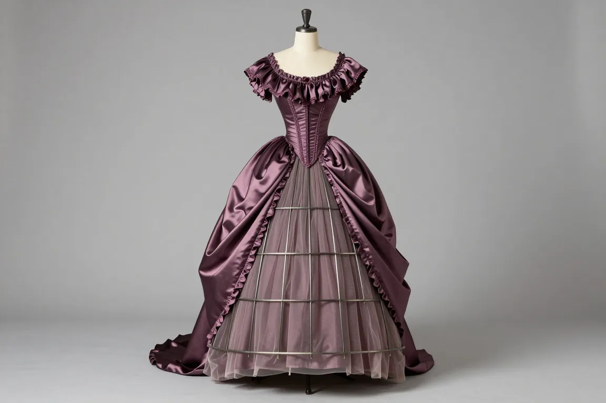

Платье с кринолином и турнюром
мода · 1856–1889 · также: Платье на кринолине-клетке, Викторианское платье с турнюром, Платье Второй империи
Платье Второй империи: огромная колоколообразная юбка на стальной клетке с 1856 года, затем турнюр с 1870-го, в плотном шёлке.

Главная идея
Юбка и есть платье: стальная клетка, а затем турнюр несут ярды шёлка, а дом высокой моды задаёт форму каждый сезон.
Принципы дизайна
- Несите юбку на клетке из 12–20 стальных обручей; подол достигает 3 м в поперечнике.
- Кройте корсаж плотно по телу, с мысом спереди и талией 56–63 см.
- Берите 10–20 м шёлка на дневную юбку и до 40 м на бальное платье.
- В 1870-х переносите полноту назад на турнюр из проволоки и конского волоса.
- Драпируйте верхнюю юбку фестонами сзади и добавляйте шлейф для вечера.
- Отделывайте юбку воланами, складками, бантами и тесьмой рядами.
- Берите новые стойкие красители, чтобы цвет был глубоким и ярким.
Антипаттерны
- Юбка, свисающая прямо с талии
- Мягкая талия без корсета
- Бледный муслин без подкладки
- Голая простая юбка без отделки
- Короткий подол, открывающий ногу
- Эластичная ткань или тонкий джерси
Палитра
Родословная
- Перекликается с
- Викторианский интерьер, Викторианская мануфактура
- Развился из
- Платье ампир
- Развился в
- Нью-лук
- Скрещивается с
- Корсет с прямой планшеткой
- Вызвал реакцию
- Платье гарсон и флэппер
Использовать
SKILL.md · tokens.css · исходный JSON · открыть в демо